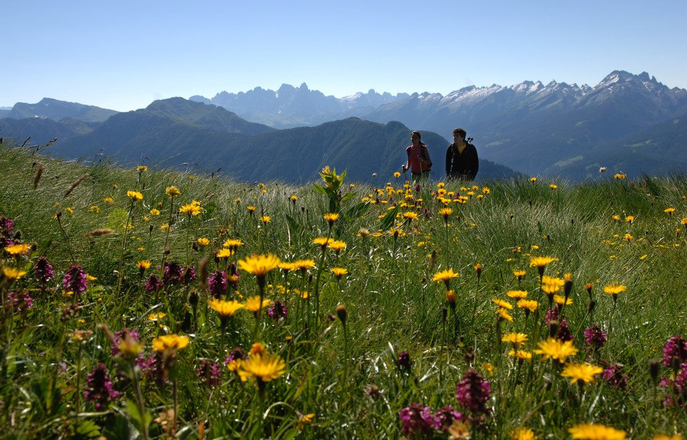
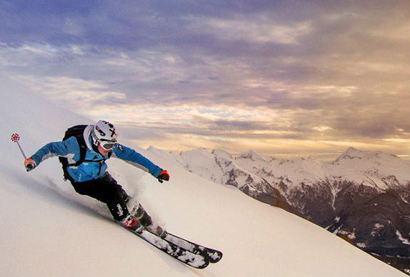

    <!-- ******FEATURES****** --> 
    <section id="vacanza-attiva" class="features section">
        <div class="container text-center">
            <h2 class="title">VACANZA ATTIVA</h2>
            
            
            <p class="text-center right-text">Una vacanza attiva in Val di Fiemme significa divertimento e sport senza confini durante tutto l’anno.
Stress e quotidianità alle spalle, davanti a voi verdi distese, cime dolomitiche, cielo azzurro, sole e aria cristallina.
Un paradiso nel quale ricaricarsi, dalla semplice passeggiata al trekking più impegnativo, da intraprendere a piedi, a cavallo o con la mountain bike.</p><br>
			<div class="clear"></div>

            <p class="text-center right-text">Infinite possibilità! Troverete torrenti adatti al rafting, rocce da arrampicare e il brivido del parapendio.
E, in inverno, in un paesaggio bianco da fiaba, via con le ciaspole, con gli sci, lo slittino o ancora i pattini su ghiaccio.
Il comprensorio sciistico Dolomiti super ski offre 1220 km di piste per gli amanti dello sci alpino!
Mentre per chi vuole praticare lo sci di fondo, 150 km di piste innevate, con  la famosa pista della Marcialonga.</p>
            
            
            

        </div><!--//container-->
    </section><!--//features-->
